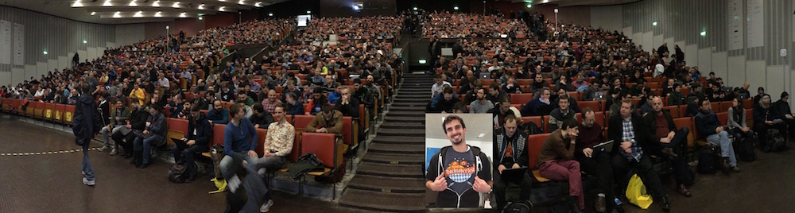
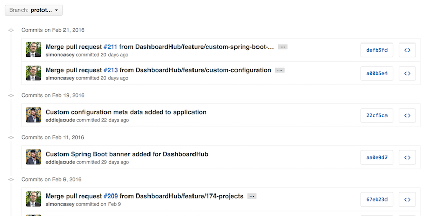

GitHub
Introduction
Created by OpenMicroPresentations
GitHub
What is GitHub?
Facebook for code
With a community of more than 12 million people
Discover, use, and contribute to over 31 million projects using a powerful collaborative development workflow
Missed an event?
Part of a community
Organisation
User
Repository
You can have more than one per Project
Example repo names for single Project
| Frontend / Client-side | Backend / Server-side |
|---|---|
| MyApp-iphone | MyApp-authentication-api |
| MyApp-android | MyApp-blog-api |
| MyApp-web-ui | MyApp-comments-api |
| MyApp-health-api | |
| ... |
Commit History
Issue section
Log all ideas / tasks etc
Milestones section
Groups of Issues
Wiki
Documentation / Presentation ideas etc

Conclusion
Do Open Source!
One negative, you might not enjoy your closed source projects anymore
Slides written in html, css with @revealjs